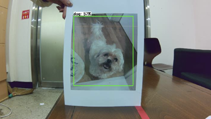
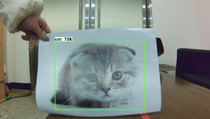
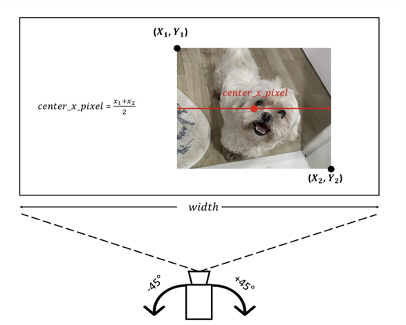
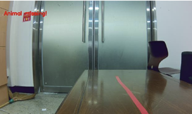
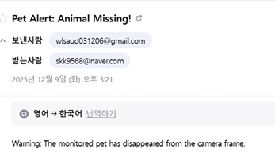

Raspberry Pi 5와 TFLite를 활용해 반려동물을 실시간으로 탐지하고, 바운딩 박스 중심 오차를 기반으로 2축 짐벌을 제어해 추적했습니다. 일정 프레임 이상 감지되지 않으면 실종 상태로 판단해 SMTP를 통해 보호자에게 이메일 알림을 전송하도록 구현했습니다.
카메라 영상 입력부터 반려동물 탐지, 짐벌 추적, 실종 판단과 이메일 알림까지의 시스템 구조입니다.
실시간 영상 입력
반려동물 탐지
프레임별 검출 확인
center_x · error_x
중심 오차 기반 · ±45°
150프레임
SMTP 이메일 전송

강아지 검출

고양이 검출
center_x 계산
error_x 산출

짐벌 제어 시스템 구조도
객체가 화면 중심에서 벗어난 정도를 계산하고, 이를 짐벌이 회전해야 할 각도로 변환해 실시간 추적에 활용했습니다.

150프레임 연속 미감지 · Animal missing

실종 판정 후 보호자 이메일 알림
반려동물 위치에 따른 짐벌 추적과, 미감지 지속 시 실종 판정 및 이메일 알림 동작을 확인했습니다.
반려동물 위치 변화 → 중심 오차 계산 → 짐벌 추적
150프레임 연속 미감지 → Animal missing → 이메일 알림
객체 중심 오차를 짐벌 회전각으로 변환하는 추적 로직과, 미감지 상태를 누적해 이메일을 전송하는 실종 알림 로직입니다.
# 바운딩 박스 중심 좌표 정규화
center_x = center_x_pixel / frame_width
# 화면 중앙(0.5)과의 오차 계산
error_x = center_x - 0.5
# 오차를 ±45° 회전각으로 변환
theta_max = 45.0
angle = error_x * 2 * theta_max
# 짐벌 회전 범위 제한
angle = max(-theta_max, min(theta_max, angle))
set_servo_angle(angle)# 미감지 상태 누적
if not animal_detected:
missing_count += 1
else:
missing_count = 0
# 150프레임 이상 미감지 시 실종 판단
if missing_count >= 150:
warning = "Animal missing"
msg = MIMEText(warning)
msg["Subject"] = "Pet monitoring alert"
msg["To"] = receiver_email
with smtplib.SMTP(SMTP_SERVER, 587) as server:
server.starttls()
server.login(SENDER_EMAIL, SENDER_PASSWORD)
server.sendmail(
SENDER_EMAIL,
receiver_email,
msg.as_string()
)단일 객체 환경에서 짐벌 추적·실종 알림이 의도대로 동작함을 확인했고, 다중 반려동물 환경에서 발생한 객체 전환과 단일 검출 방식의 한계를 분석했습니다.
반려동물 탐지 결과를 짐벌 제어와 실종 알림으로 연결하면서, 인식 기능 하나를 구현하는 것보다 각 기능이 실제 동작 흐름 안에서 안정적으로 이어지도록 설계하는 것이 중요하다는 점을 배웠습니다. 또한 다중 객체 환경에서 발생한 Switching 현상을 통해 실제 환경에서는 예외 상황과 구조적 한계까지 함께 고려해야 한다는 점을 경험했습니다.